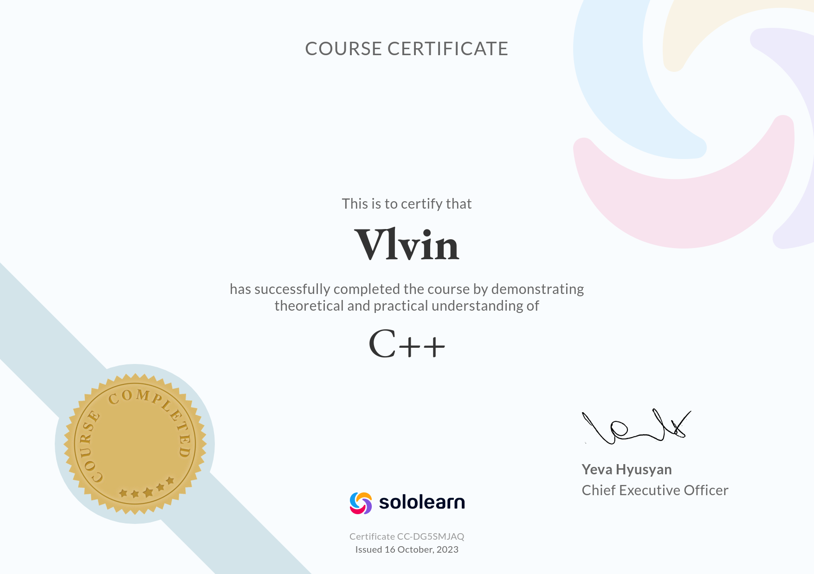

Vladimir Golovin


Summary
- Versatile tech stack
- Ability to learn fast
- Passion to code :)
Courses
- Sololearn | C++ — October 2023
- Itransition training | Commertial Software Development — Jan 2025 - Mar 2025
Experience
ITransition – Web Developer Intern Jan 2025 — Mar 2025
- Performed various tasks
- Developed full-stack application
Projects
GhostForms App | ASP.NET (C#), React (JS), Docker | GitHub Repository Mar 2025 — Mar 2025 - Started Full-stack application for ITransition internship - Created UI using React and Bootstrap framework - Implemented backend with ASP.NET - Docker for deployment
Clocks Virtual Machine | C | GitHub Repository Oct 2024 — Present
- Creating simple bytecode machine and compiler for Clocks programming language.
Also researching corresponding tecnologies and algorithms (e.g. Bytecode machine, Hash Table)
Clocks Interpreter | C++ | GitHub Repository Sep 2023 — Feb 2024 - Developed Clocks language interpreter from the ground up. Performed optimization on return statement which resulted in 95% reduced execution time. Also filled std library with I/O and Math functionality
Technical Skills
- Programming Languages: C, C++, C#, Python, Java, HTML, JavaScript, SQL
- Build Tools: CMake, Gradle
- Software Development: Object-Oriented Programming (OOP), SOLID Principles, Design Patterns, Data Structures and Algorithms
- CI/CD: Git, Docker
Extracurricular / Certifications:
